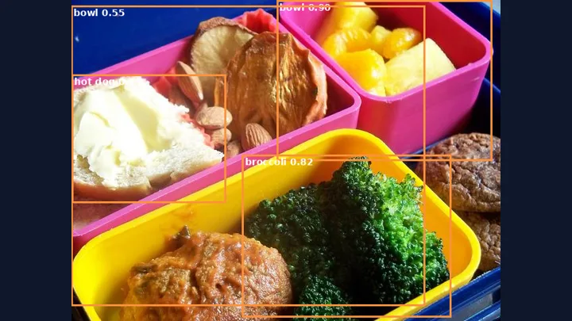

Agentic and MCP
vision-agent-mcp
26/36 → 28/36
An LLM agent needs computer-vision tools, and the quality of the tool descriptions decides how well it uses them.
Build, result and limits
- Built
- An MCP server with five tools (list, detect, count, summarize and compare images) over a YOLOv8n ONNX detector, and a 36-case harness that scores the agent against COCO128 labels. Typed Python with 14 unit tests.
- Result
- The agent scored 26/36 with the tools as first written. One sentence in two tool descriptions (retry once at lower confidence) lifted it to 28/36. The detector alone scored 26/36.
- Limits
- 36 cases and one run per setting, so the gain is a signal and not proof. The detector was trained on COCO images, so absolute numbers are optimistic. The README lists two evaluation flaws found and fixed.
- Link
- github.com/guilherme-r-monteiro/vision-agent-mcp